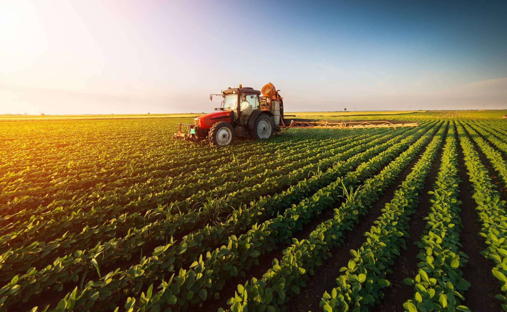
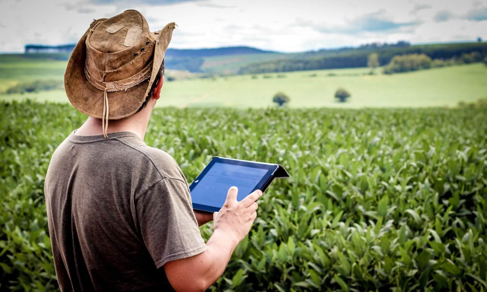

Problema
Produtores rurais enfrentam perdas causadas por clima e monitoramento insuficiente.
A falta de dados em tempo real dificulta decisões rápidas e eficientes.

Tecnologia
Dados Orbitais
Informações coletadas por satélites do INPE, NASA e ESA.
Sensores IoT
Monitoramento de solo, temperatura e umidade em tempo real.
Análise Inteligente
Processamento local via Arduino com alertas automáticos.
Objetivos
Reduzir perdas
Identificar riscos climáticos antes que afetem a produção.
Economizar recursos
Melhorar o uso de água e energia nas lavouras.
Agricultura sustentável
Incentivar práticas agrícolas mais eficientes e inteligentes.

Público-Alvo
O SpaceFarm atende produtores, cooperativas e empresas agrícolas.
- Produtores rurais
- Cooperativas agrícolas
- Empresas do agronegócio
- Pesquisadores ambientais
- Instituições agrícolas
Benefícios
Monitoramento em tempo real
Alertas automáticos
Produção sustentável
Prevenção climática
Melhor tomada de decisão
Redução do desperdício
Teste seus conhecimentos
Teste seus conhecimentos sobre agricultura inteligente e sustentabilidade.
Iniciar QuizAplicação no Dia a Dia
Temperatura
Sensores identificam mudanças climáticas na lavoura.
Umidade
O sistema monitora níveis ideais para irrigação.
Satélites
Dados orbitais ajudam no acompanhamento da vegetação.
Alertas Web/App
Produtores recebem notificações inteligentes em tempo real.